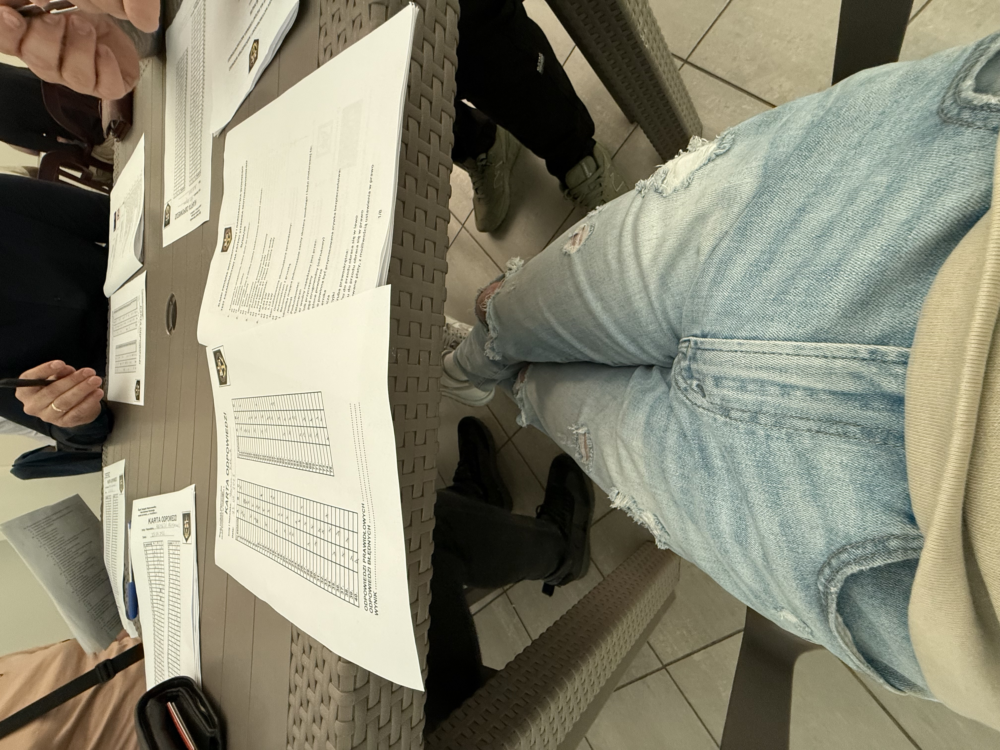
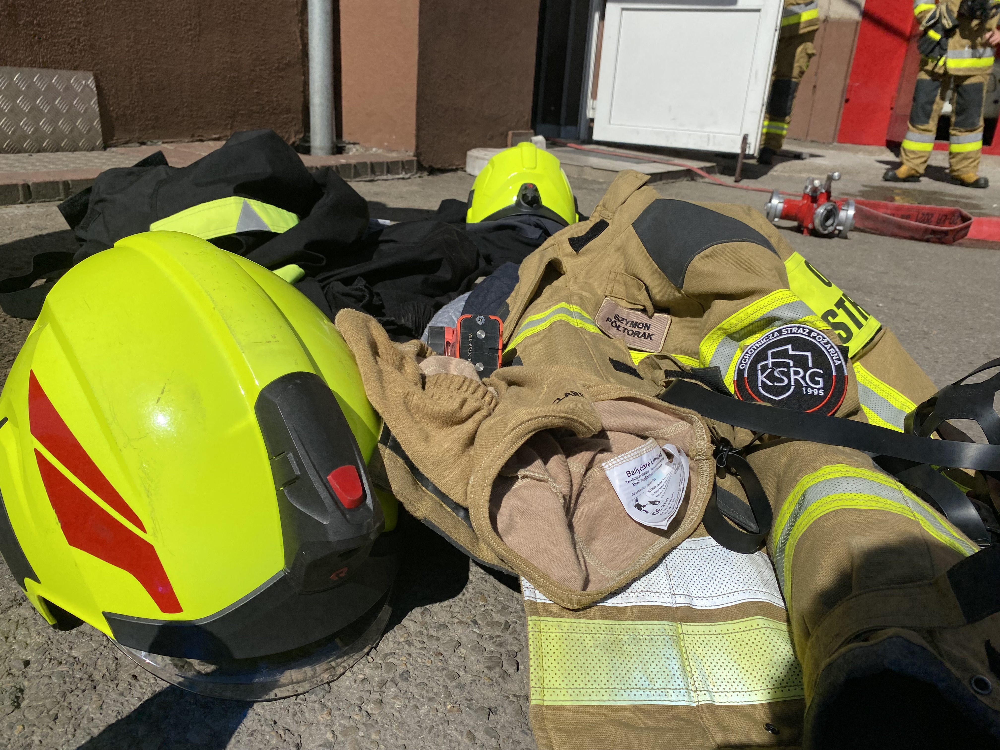
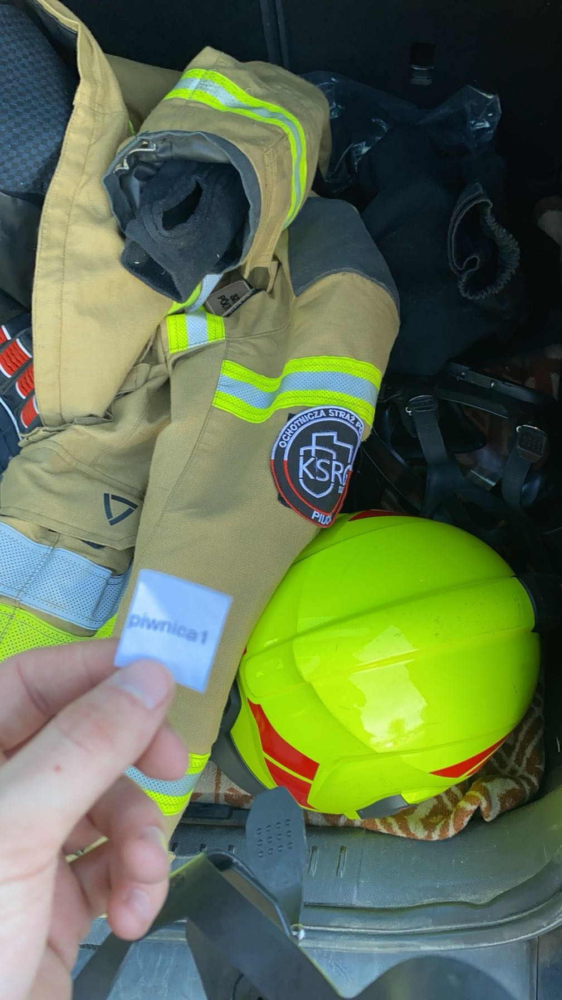

Hej. Jestem Szymon. Większość z was, skoro tutaj trafiła, na pewno mnie zna, więc nie muszę się specjalnie przedstawiać.
Od małego chciałem mieć coś swojego, coś w rodzaju życiowego „pamiętnika”. Dużą inspiracją były dla mnie osoby, które przewijały się przez moje życie, albo te, które są w nim do dziś, i miały coś własnego, oryginalnego w takim stylu. Zawsze robiło to na mnie duże wrażenie i za każdym razem utwierdzałem się w przekonaniu, że też chciałbym mieć coś takiego.
Fajnie jest zostawić po sobie jakiś ślad tutaj, na ziemi. Niestety natura naszego życia jest taka, że prędzej czy później wszyscy stąd odejdziemy. Zostajemy tu tak długo, jak długo inni o nas pamiętają.
Artyści pozostają z nami, dopóki ich sztuka czy muzyka wciąż żyje w ludziach. Nasi przodkowie, chcąc zostawić po sobie jakiś ślad, pisali listy, zostawiali grawery w różnych miejscach albo przekazywali z pokolenia na pokolenie rodzinne pamiątki.
Dzisiaj, w czasach w których przyszło nam żyć, możemy zrobić coś podobnego w inny sposób. Możemy stworzyć stronę internetową, która - jak wszystko w internecie, w pewnym sensie zostanie tutaj na zawsze. Może kiedyś ktoś tutaj trafi i zobaczy kawałek mojego życia, takim, jakim naprawdę było.
Awansować na stopień aspiranta, zaliczyć szkołe aspirantów PSP
Status: niezrealizowane
Data realizacji: —
Zrobić patent sternika motorowodnego
Status: zrealizowane ✅
Data realizacji: 25 maja 2025

Wybaczyć każdemu, kto mnie zawiódł
Status: niezrealizowane
Data realizacji: —
Zostać strażakiem OSP
Status: zrealizowane ✅
Data realizacji: 19 maja 2024


Dotknąć lwa na żywo
Status: niezrealizowane
Data realizacji: —
Odwiedzić miasteczko świętego Mikołaja w Laponii
Status: niezrealizowane
Data realizacji: —
Kupić i odebrać swoje nowe auto z salonu
Status: niezrealizowane
Data realizacji: —
Zacząć biegać
Status: zrealizowane ✅
Data realizacji: 7 sierpnia 2022
Przebiec maraton
Status: niezrealizowane
Data realizacji: —
Przebiec cały beep test do straży pożarnej (12-6)
Status: niezrealizowane
Data realizacji: —
Kupić jedną uncje złota
Status: niezrealizowane
Data realizacji: —
Uratować komuś życie
Status: zrealizowane, i to nie raz 😇
Data realizacji: 2024<
Zdać mature
Status: zrealizowane ✅
Data realizacji: ~ 2024
Obejrzeć zachód słońca na dachu wieżowca
Status: niezrealizowane
Data realizacji: —
Kupić mieszkanie pod wynajem
Status: niezrealizowane
Data realizacji: —
Być świadkiem na ślubie
Status: niezrealizowane
Data realizacji: —
Przeżyć impreze na jachcie
Status: niezrealizowane
Data realizacji: —
Kupić mieszkanie/dom za granicą
Status: niezrealizowane
Data realizacji: —
Pomóc i odwiedzić dzieci z fundacji cancer fighters
Status: niezrealizowane
Data realizacji: —
Kupić swoją własną broń
Status: niezrealizowane
Data realizacji: —
Nauczyć się drukować na drukarce 3D
Status: niezrealizowane
Data realizacji: —
Zobaczyć Islandie na żywo
Status: niezrealizowane
Data realizacji: —
Nauczyć się grać na gitarze
Status: niezrealizowane
Data realizacji: —
Nauczyć się grać na pianinie
Status: niezrealizowane
Data realizacji: —
Nauczyć się jeździć na snowboardzie (i się nie zabić przy tym)
Status: niezrealizowane
Data realizacji: —
Nauczyć się płynnie mówić po angielsku
Status: niezrealizowane
Data realizacji: —
Nauczyć się płynnie mówić po hiszpańsku
Status: niezrealizowane
Data realizacji: —
Nawiązać zagraniczną znajomość
Status: niezrealizowane
Data realizacji: —
Przywitać nowy rok na Giewoncie
Status: niezrealizowane
Data realizacji: —
Oddać krew potrzebującym
Status: niezrealizowane
Data realizacji: —
Odwiedzić Dubaj
Status: niezrealizowane
Data realizacji: —
Odwiedzić kasyno na żywo
Status: niezrealizowane
Data realizacji: —
Odwiedzić Los Angeles
Status: niezrealizowane
Data realizacji: —
Odwiedzić Nowy York
Status: niezrealizowane
Data realizacji: —
Odwiedzić Oldtrafford
Status: niezrealizowane
Data realizacji: —
Odwiedzić Chicago
Status: niezrealizowane
Data realizacji: —
Odwiedzić serialową remizę 51 z serialu Chicago Fire
Status: niezrealizowane
Data realizacji: —
Zostać strażakiem PSP
Status: niezrealizowane
Data realizacji: —
To miejsce jest dla słów, które coś we mnie zostawiły.
Czasem to jedno zdanie. Czasem fragment rozmowy. Czasem coś, co ktoś powiedział przypadkiem, a zostało we mnie na dłużej.
Tak się jakoś układa, że często rozmawiam z ludźmi dużo starszymi ode mnie.
I bardzo często można się od nich nauczyć więcej, niż się spodziewałem.
Zawsze chciałem mieć miejsce, do którego mogę wrócić i przypomnieć sobie coś mądrego, co kiedyś usłyszałem.
Mam nadzieję, że to właśnie jest takie miejsce.
„Nie ma skrótów do miejsca do którego warto dojść” ~ M.P
„Panowie świętują tylko to, o co naprawdę musieli walczyć. Urodziny do tego nie należą” ~ A.T
„… nie nie, marzenia się nie spełniają. Marzenia się spełnia” ~ N.S
"Wiedz, że idziesz we właściwym kierunku, jeśli przy każdym stole przy którym zasiadasz jesteś najmłodszy"
"Wszystko ma swój czas i każda sprawa pod niebem ma swoją porę." ~ K.K 3:1
„Wyobraź sobie że leżysz na łożu śmierci. W pokoju zapada cisza, a ty czujesz, że twoje ostatnie chwile zbliżają się nieubłaganie.
Wtedy otwierają się drzwi, z hukiem.
Wchodzą postacie, jedna po drugiej. Wyglądają znajomo, ale każda z tych osób ma w sobie żal i coś przerażającego.
To twoje niezrealizowane marzenia, cele i plany które porzuciłeś. Potencjał którego nigdy nie wykorzystałeś.
Podchodzą bliżej i otaczają twoje łóżko.
Jeden z nich mówi:
„Byłem twoją odwagą, ale nigdy nie pozwoliłeś mi się narodzić.”
Drugi dodaje:
„Byłem życiem które mogłeś prowadzić, gdybyś tylko działał każdego dnia.”
Trzeci mówi cicho:
„Byłem radością i dumą twojej rodziny, która nigdy nie zobaczyła do czego naprawdę byłeś zdolny.”
I nagle zdajesz sobie sprawę, że to nie oni cię osądzają.
Tylko ty sam.
Twoje sumienie.
Twoje serce.
A teraz jest za późno.
Nie możesz cofnąć czasu.
Nie możesz zacząć od nowa.
Czy naprawdę chcesz, by ten moment kiedyś stał się twoją rzeczywistością?
Jeśli nie, wstań.
Działaj.
Bo każdy kolejny dzień odkładania czegoś „na potem” przybliża cię do takiego finału.”
"Stracił*ś dla mnie tyle czasu, że poczułem sie ważny." ~ M.K
„Sukces to przechodzenie od porażki do porażki bez utraty entuzjazmu” ~ W.C
"Opowiem wam bajke, jak krzyk zakochał sie w ciszy" ~ T.H
"Ryzykuj.
Uda się, będziesz szczęśliwy.
Nie uda się, będziesz mądrzejszy."
„Punkt widzenia zależy od punktu siedzenia”
"Zmień świat, zacznając od siebie." ~ J.H
"Ten, kto widzi zbyt wiele, nigdzie nie pasuje" ~F.N
"Trzeba nastawić się na najlepsze, i przygotować na najgorsze..." ~ M.K